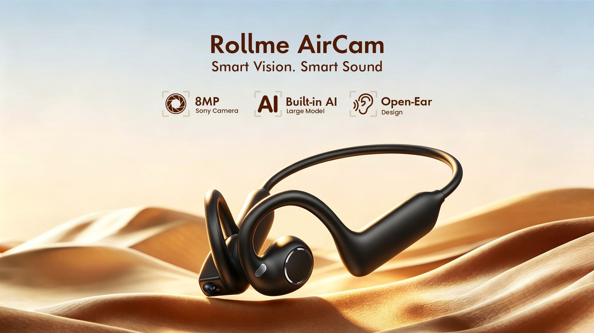
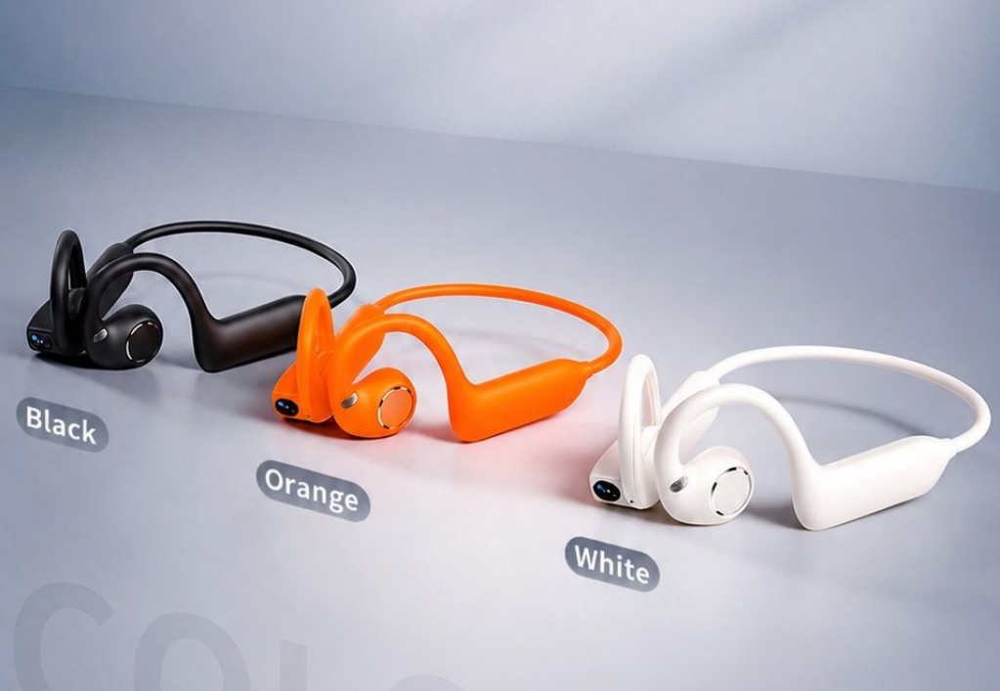

제품 소개
Rollme가 오픈 이어 헤드폰과 8메가픽셀 카메라, AI 음성 기능을 결합한 새로운 웨어러블 기기인 AirCam을 출시했습니다. 이 제품은 다른 기술 기업들이 선보이는 스마트 글래스 형태 대신, 핸즈프리 녹화에 적합한 랩어라운드(wraparound) 헤드셋 디자인을 채택하여 차별화된 폼팩터를 제공합니다.
AirCam 사양
AirCam은 사이드에 장착된 8MP Sony 카메라를 탑재하여 1080p 해상도에 30fps 프레임의 비디오 촬영이 가능합니다. 자전거, 하이킹, 러닝과 같이 가슴 마운트나 핸드헬드 방식이 번거로운 야외 활동을 위해 전자식 이미지 손떨림 보정(EIS) 기능을 포함하여 부드러운 영상을 구현하도록 설계되었습니다.
기기 제어는 헤드셋의 직관적인 터치 인터페이스를 통해 이루어집니다. 한 번 탭하면 사진이 촬영되고, 두 번 탭하면 비디오 녹화 모드가 전환되며, 세 번 탭하면 오디오 녹음이 시작됩니다. 미디어 데이터는 내장된 8GB 저장 공간에 직접 저장되며, 듀얼 밴드 Wi-Fi 6를 통해 전송할 수 있습니다. 연속 비디오 녹화는 클립당 최대 10분으로 제한됩니다.
오디오의 경우, AirCam은 16mm 다이내믹 드라이버가 탑재된 오픈 이어 디자인을 채택했습니다. 스피커가 외이도 밖에 위치하여 주변 소음이 유입되므로, 음악을 들으면서도 교통 상황이나 보행자를 인지할 수 있어 피트니스 웨어러블 기기에 적합한 구성입니다. 또한 전화 통화 시 배경 소음을 걸러내는 환경 소음 제거(ENC) 기능이 포함된 듀얼 마이크를 탑재했습니다.
Rollme는 기기에 AI 소프트웨어 기능을 통합하고 있습니다. 이 헤드셋은 대규모 언어 모델(LLM)과 연결되어 음성 질의를 처리하고 실시간 번역을 제공합니다. 또한 카메라를 시각 인식용으로 활용하여 사용자의 시야에 있는 텍스트, 사물 또는 랜드마크를 식별하고 관련 정보를 제공할 수 있습니다.
헤드셋은 220mAh 배터리로 구동됩니다. Rollme는 이 용량으로 최대 10시간의 음악 재생 또는 통화 시간과 120시간의 대기 시간을 제공한다고 밝혔습니다.
가격 및 출시 정보
Rollme AirCam은 현재 Rollme 공식 온라인 스토어에서 $79.99에 판매되고 있습니다. 색상은 Classic Black, Vibrant Orange, Pearl White 세 가지 옵션으로 제공됩니다.
관련 소식
최근 Rollme는 듀얼 밴드 GPS, 오프라인 지도 지원 및 MIL-STD 810H 등급의 내구성을 갖춘 Hero D5 스마트워치를 공개했습니다.
총평
Rollme AirCam은 오픈 이어 헤드셋과 카메라 기능을 결합하여 야외 활동 중 편리한 핸즈프리 촬영과 AI 기반 음성 기능을 동시에 제공하는 독특한 웨어러블 기기입니다. 합리적인 가격대에 EIS와 LLM 연동 등 실용적인 기술을 집약하여 운동이나 여행 시 활용도가 높을 것으로 기대됩니다.
Product Introduction
Rollme has launched AirCam, a new wearable device that combines open-ear headphones with an 8-megapixel camera and AI voice features. Unlike the smart glasses form factor offered by other tech companies, this product utilizes a wraparound headset design specifically tailored for hands-free recording.
AirCam Specifications
The AirCam features a side-mounted 8MP Sony camera capable of capturing video at 1080p resolution at 30fps. Designed for outdoor activities such as cycling, hiking, and running—where chest mounts or handheld devices can be inconvenient—it includes Electronic Image Stabilization (EIS) to ensure smooth video footage.
The device is controlled through an intuitive touch interface on the headset:
- Single tap: Take a photo
- Double tap: Toggle video recording mode
- Triple tap: Start audio recording
Media data is stored directly on internal 8GB storage and can be transmitted via dual-band Wi-Fi 6. Continuous video recording is limited to a maximum of 10 minutes per clip.
For audio, the AirCam adopts an open-ear design equipped with 16mm dynamic drivers. Because the speakers are positioned outside the ear canal, users can remain aware of their surroundings, such as traffic or pedestrians, while listening to music, making it well-suited for fitness wearables. Additionally, it features dual microphones with Environmental Noise Cancellation (ENC) to filter out background noise during phone calls.
Rollme has integrated AI software capabilities into the device. The headset connects to Large Language Models (LLM) to process voice queries and provide real-time translation. Furthermore, the camera is utilized for visual recognition to identify text, objects, or landmarks within the user's field of view and provide relevant information.
The headset is powered by a 220mAh battery. Rollme states that this capacity provides up to 10 hours of music playback or talk time, with 120 hours of standby time.
Pricing and Availability
Rollme AirCam is currently available on the official Rollme online store for $79.99. It is offered in three color options: Classic Black, Vibrant Orange, and Pearl White.
Related News
Recently, Rollme also unveiled the Hero D5 smartwatch, which features dual-band GPS, offline map support, and MIL-STD 810H durability rating.
Summary
The AirCam is a unique wearable that combines open-ear headphones with an integrated camera and AI capabilities for hands-free recording during outdoor activities. By integrating practical technologies like EIS and LLM connectivity at a competitive price point, it offers high utility for fitness enthusiasts and travelers.
製品紹介
Rollmeは、オープンイヤーヘッドフォン、8メガピクセルのカメラ、およびAI音声機能を統合した新しいウェアラブルデバイス「AirCam」を発表しました。この製品は、他の企業が提供するスマートグラスの形状ではなく、ハンズフリー録画に適したラップアラウンド（wraparound）型のヘッドセットデザインを採用しており、独自のフォームファクターを提供しています。
AirCam 仕様
AirCamはサイドに搭載された8MP Sonyカメラを装備しており、1080p解像度で30fpsのビデオ撮影が可能です。自転車、ハイキング、ランニングなど、チェストマウントや手持ちでの撮影が煩わしいアウトドア活動向けに設計されており、電子式画像手ブレ補正（EIS）機能を搭載することで滑らかな映像を実現します。
デバイスの操作はヘッドセットの直感的なタッチインターフェースを通じて行われます。
- 1回タップ：写真撮影
- 2回タップ：ビデオ録画モードへの切り替え
- 3回タップ：オーディオ録音の開始
メディアデータは内蔵の8GBストレージに直接保存され、デュアルバンドWi-Fi 6を通じて転送することが可能です。なお、連続ビデオ録画は1クリップあたり最大10分間に制限されます。
オーディオに関しては、AirCamは16mmダイナミックドライバーを搭載したオープンイヤーデザインを採用しています。スピーカーが外耳道の外側に配置されているため、周囲の騒音を取り込みながら音楽を楽しむことができ、交通状況や歩行者を認識できるためフィットネス向けウェアラブルに適した構成となっています。また、通話時には環境ノイズキャンセリング（ENC）機能を備えたデュアルマイクを搭載しています。
RollmeはデバイスにAIソフトウェア機能を統合しています。このヘッドセットは大規模言語モデル（LLM）と連携し、音声クエリの処理やリアルタイム翻訳を提供します。さらに、カメラを視覚認識用として活用することで、ユーザーの視界にあるテキスト、物体、またはランドマークを識別し、関連情報を提供することが可能です。
ヘッドセットは220mAhのバッテリーで駆動します。Rollmeによると、この容量で最大10時間の音楽再生または通話時間、および120時間の待機時間を実現しています。
価格および発売情報
Rollme AirCamは現在、Rollme公式オンラインストアにて$79.99で販売されています。カラーバリエーションはClassic Black、Vibrant Orange、Pearl Whiteの3種類から選択可能です。
関連ニュース
最近、RollmeはデュアルバンドGPS、オフラインマップ対応、およびMIL-STD 810H規格の耐久性を備えたスマートウォッチ「Hero D5」を発表しました。
まとめ
Rollme AirCamは、オープンイヤーヘッドフォンとカメラ機能を融合させ、アウトドア活動中のハンズフリー撮影とAI音声機能を同時に提供するユニークなウェアラブルデバイスです。EISやLLM連携といった実用的な技術をリーズナブルな価格で提供しており、運動や旅行における利便性が高く期待されます。
Product Introduction
Rollme has launched AirCam, a new wearable device that combines open-ear headphones with an 8MP camera and AI voice features. Unlike the smart glasses form factor offered by other tech companies, it utilizes a wraparound headset design specifically optimized for hands-free recording.
AirCam Specifications
The AirCam is designed for outdoor activities such as cycling, hiking, and running, where chest mounts or handheld devices can be cumbersome. It features a side-mounted camera equipped with Electronic Image Stabilization (EIS) to ensure smooth video footage.
- Camera: 8MP Sony sensor
- Video Resolution: 1080p @ 30fps
- Storage: 8GB internal storage
- Connectivity: Dual-band Wi-Fi 6
- Recording Limit: Maximum of 10 minutes per clip
The device features an open-ear design with 16mm dynamic drivers. By placing the speakers outside the ear canal, it allows users to remain aware of their surroundings—such as traffic or pedestrians—while listening to music, making it well-suited for fitness wearables. Additionally, it includes dual microphones with Environmental Noise Cancellation (ENC) to filter out background noise during phone calls.
Rollme has integrated AI software into the device, connecting the headset to Large Language Models (LLM) to process voice queries and provide real-time translation. The camera also serves as a tool for visual recognition, allowing it to identify text, objects, or landmarks within the user's field of vision and provide relevant information.
- Battery: 220mAh
- Music/Talk Time: Up to 10 hours
- Standby Time: Up to 120 hours
Price and Availability
The Rollme AirCam is currently available on the official Rollme online store.
- Price: $79.99
- Color Options: Classic Black, Vibrant Orange, Pearl White
Related News
Rollme recently unveiled the Hero D5 smartwatch, which features dual-band GPS, offline map support, and a MIL-STD 810H durability rating.
Summary
The Rollme AirCam is a unique wearable that combines open-ear headphones with an 8MP camera to provide hands-free recording and AI-powered voice features. By integrating practical technologies like EIS, LLM support, and a wraparound design, it offers a versatile solution for users seeking both audio entertainment and smart capture capabilities during outdoor activities.

